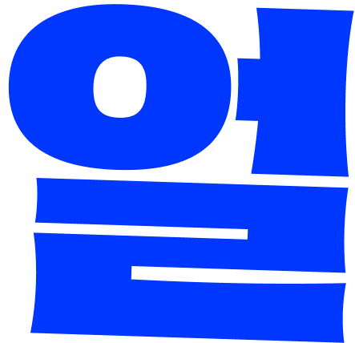
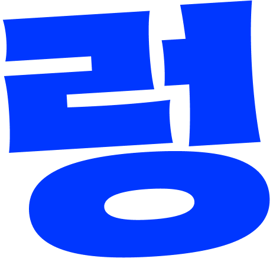
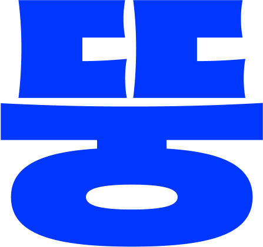
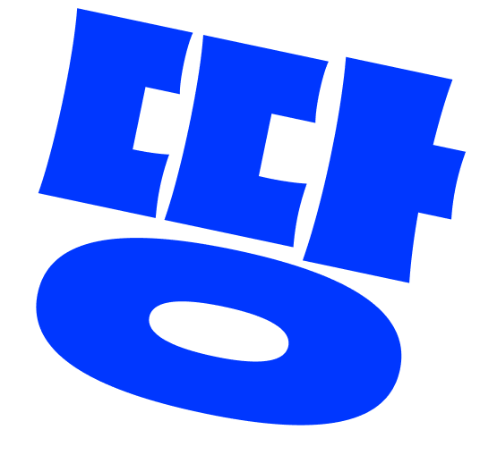
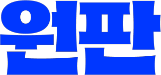
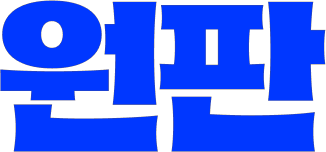

Team 1 starts from the concept of the “Coriolis force,” exploring the complexity of family relationships
and the flow of emotions within them. Team 2 explores the gap between social perspectives
and personal intimacy through a fake documentary about the daily life of a politically mismatched couple.
Though their approaches and contents differ, both teams share an attitude of attempting, composing,
and deciding from an unsettled state. This reflects the incomplete character, spontaneity,
and cautious experimentation implied by the word “slapdash.”
This exhibition does not present a clear theme or a dazzling conclusion.
Instead, it presents the creators’ inconsistent perspectives, emotions, and attempts as they are,
allowing the audience to encounter the imperfect questions and the raw attitude itself.
 
